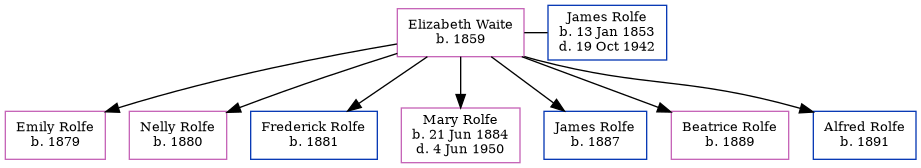

Elizabeth Serena Rolfe (née Waite) 1859 -
[ Home ] | [ Calendar ] | [ Surnames Index ] | [ Errors ] | [ Family History ]Elizabeth Waite, the wife of James Rolfe (the first cousin three-times-removed on the father's side of Nigel Horne), was born in Binfield, Oxfordshire, England in 18591,2 and married James (a coachman with whom she had 7 children: Emily, Nelly, Frederick, Mary Jane, James, Beatrice and Alfred) in Henley on Thames, Oxfordshire, England around Aug 18783.
During her life, she was living at Casement Cottage, Cheriton, Kent, England on 3 Apr 18811; and at Cheriton Court in Cheriton on 5 Apr 18912.
Children
- Emily was born in 1879
- Nelly was born in 1880
- Frederick was born in 1881
- Mary Jane was born on 21 Jun 1884
- James was born in 1887
- Beatrice was born in 1889
- Alfred was born in 1891
Citations
- 1881 England, Wales & Scotland Census - Findmypast (was age 22 and the wife of the head of the household)
- 1891 England, Wales & Scotland Census - Findmypast (was age 30 and the wife of the head of the household)
- England & Wales Marriages 1837-2005 - Findmypast
Media
1891 England, Wales & Scotland Census - GBC/1891/0006020828
Family Tree
Map
Generated by ged2site. Last updated on Jul 3, 2024